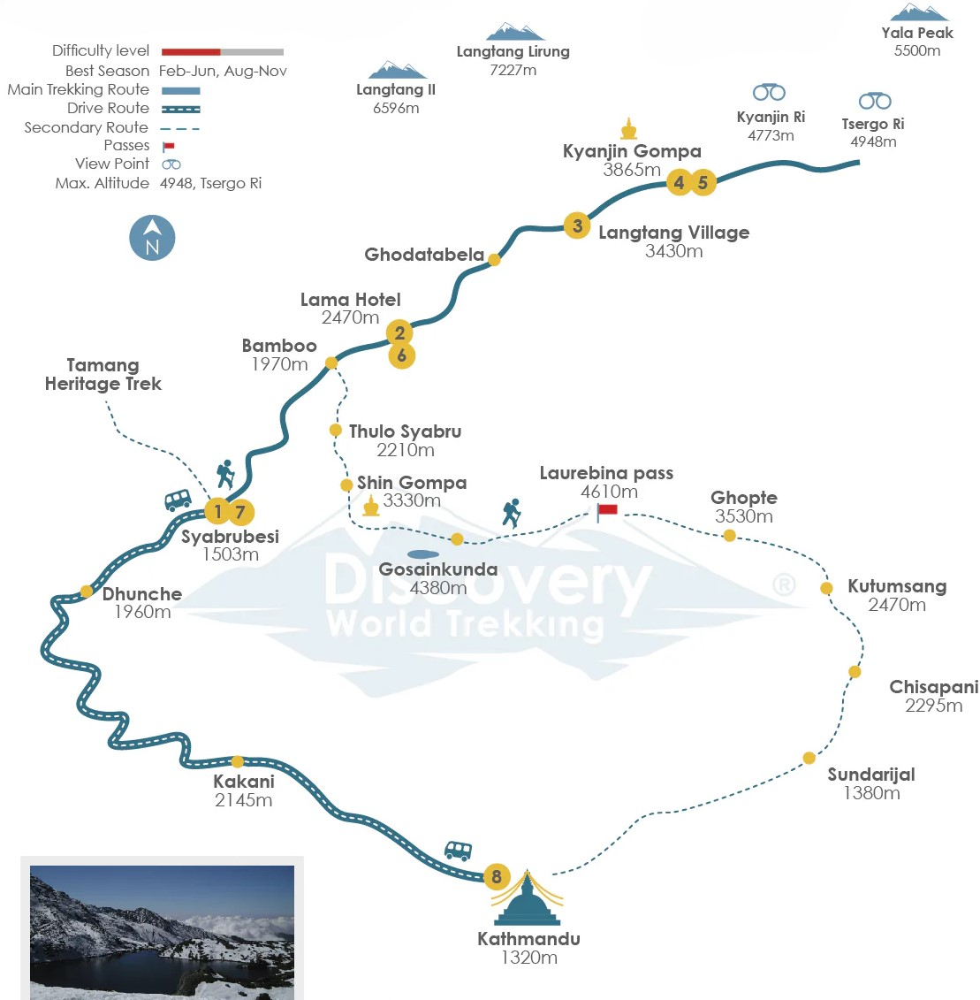

Drive from Kathmandu (1400m / 4,393ft) to Syabrubesi (1,503m / 4,655ft)
After early morning breakfast, the drive to Syabrubesi begins. We head north out of Kathmandu. During the journey,
you can catch fantastic views of rivers, terraced fields, small villages, and snow-capped mountains. The road takes
you to a small town - Dhunche. While on the road that follows Trishuli River banks, you will catch glimpses of Ganesh
Himal 7,422 m (24,350 ft). From Dhunche, we continue the drive until we reach Syabrubesi. You can explore this town for
a while but do not forget to experience the riverside hot spring.
Trek From Syabrubesi (1,503m / 4,655ft) to Lama Hotel (2,470m / 8,103ft)
We begin our trek from Syabrubesi, following Bhote Kosi and Langtang Rivers passing through fertile jungles, terraced fields,
and rural settlements rich in bamboo and birch groves. You might spot rare wild lives like the red panda from the path. After
a while, the trek ascends gently to Rimche (2,400m / 7,874ft) through dense bamboo fields alongside the banks of Langtang River.
We continue on our route until we reach Lama Hotel - the destination for the day.
Trek from Lama Hotel (2,470m / 8,103ft) to Langtang village (3,430m / 11,255ft)
We begin our day with an early morning breakfast and start trekking alongside a river through the lush landscape, climbing upward
through the dense forests. Along the way, you might see the snowy peaks ahead if the weather is favorable. Ultimately the narrow
river valley broadens out at Ghoda Tabela (3,030m). In the past, there was a Tibetan resettlement project running here, but currently,
Ghoda Tabela has an army check post where we will register our papers. In addition to the army check post, there are a few lodges here.
As we trek further, we will come across Chyamki village (3,230m) - a small settlement and walk past Chortens, water mills, mani walls,
and prayer wheels, which signals we are nearing Langtang Village. We continue past prayer wheels driven by flowing water and prayer
flags to scenic Langtang, a large settlement of mostly Tamang people.
Trek from Langtang village (3,430m / 11,255ft) to Kyanjin Gompa (3,865m / 12,675ft)
The trek today will be short and easy. We will pass by many small plateaus, big mani walls, yak pastures, small villages, and meadows.
Since we will be gaining elevation, we trek slowly so that our bodies can acclimatize. After hiking for a while, we will come across
water mills, prayer wheels, sacred mounds of rocks with inscriptions carved on them. It signals that we have reached the ancient
monastery- Kyanjin Gompa (3,830m / 12,565 ft). Kyanjin Gompa lies surrounded by the Himalayas, and from here, we get stunning views
of several snow-capped peaks.
Exploration day at Kyanjin Gompa
We can rest for a day to acclimatize and explore this beautiful Langtang region. The Langtang valley has so much to offer for trekkers.
Higher elevation means you will be getting stunning views of the Himalayas ranges and glaciers. You will be visiting Kyanjin Gompa and
observing monks offering their prayers. The cheese factory would also be another interesting site to visit. We can also hike to Langshisa
Kharka and the viewpoint of Tserko Ri (5,450m/17,880ft)- the highest point of this trek. Tserko Ri is the perfect viewpoint to admire peaks
like Langtang Lirung (7,227m), Langtang II (6,586m), and many more. Yet another viewpoint - Kyanjin Ri (4,773m / 15,655 ft) provides majestic
views of the Langtang range. As the sun begins to set, we will return to Kyanjin Gompa for the night.
Trek from Kyanjin Gompa (3,865m / 12,675ft) to Lama Hotel (2,470m / 8,103ft)
We will leave Kyangjin Gompa admiring the last glimpse of the beautiful mountains standing with pride and glory. But it is time for
us to retrace the previous route we took to Langtang Village, and we will stop at Ghoda Tabela for lunch. The army check post at Ghoda
Tabela will also register our exit. After a leisurely lunch, we continue down through the dense river valley forests to Lama Hotel,
where we will be staying for the night.
Trek from Lama Hotel (2,470m / 8,103ft) to Syabrubesi (1,420m / 4,655ft)
We being the final trekking day, we head to Syabrubensi to drive back to Kathmandu. We will be walking along the Langtang River,
heading downwards to the beautiful river valley. As you descend through bamboo and birch forests, you will see amazing landscapes and
cross the Langtang and Bhote Koshi rivers to reach Syabrubesi. This marks the end of our trekking journey. The next day we will be
driving back to Kathmandu.
Drive from Syabrubesi (1,420m / 4,655ft) to Kathmandu (1400m / 4,393ft)
We will drive from Syabrubensi to Kathmandu, which will take about seven to nine hours. This drive begins early morning. During this
drive, you will be getting scenic views of the Trishuli river valley as we head south from the hills. Along the way, you will see
terraced farmlands, meadows, and hopefully final glimpses of the snow-capped mountains. Once we arrive in Kathmandu, we will drop
you at your hotel.